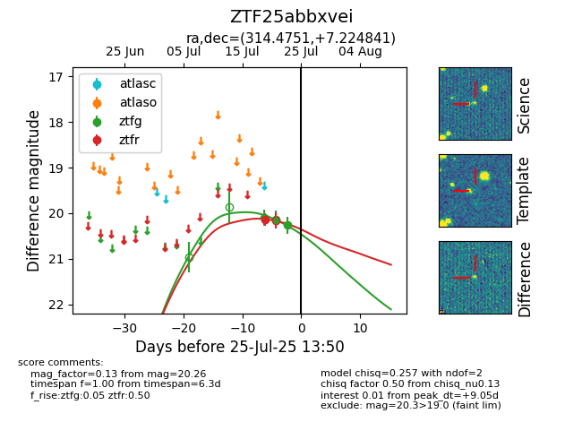

Target ZTF25abbxvei at 2025-07-25 13:50, see:
FINK: fink-portal.org/ZTF25abbxvei
Lasair: lasair-ztf.lsst.ac.uk/objects/ZTF25abbxvei
ALeRCE: alerce.online/object/ZTF25abbxvei
alt names
ZTF25abbxvei (ztf,fink)
coordinates:
equatorial (ra, dec) = (314.4751,+7.22484)
galactic (l, b) = (55.3814,-23.92233)
photometry
last ztfg=20.26, ztfr=20.14
3 ztfg, 1 ztfr detections
